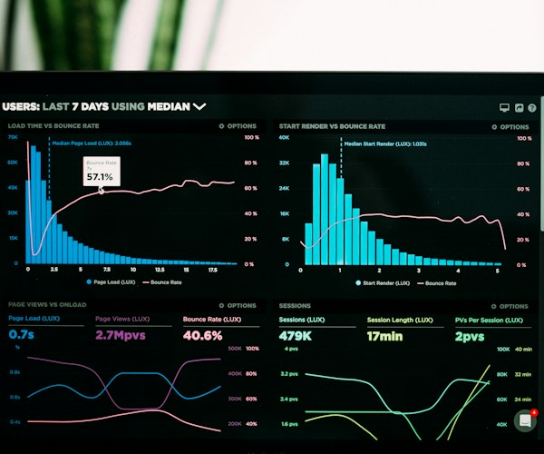

HRIS - Data-Driven HR Insights
Make smarter people decisions with a Human Resource Information System that delivers real-time analytics on workforce performance, retention, and engagement.

What Is HRIS?
A Human Resource Information System (HRIS) goes beyond basic HR record-keeping — it transforms your workforce data into actionable insights that drive better hiring, retention, and performance decisions.
Workforce Analytics
Understand your people with real-time dashboards and metrics.
Attrition Prediction
Predict who might leave and take action before it happens.
Performance Insights
Track productivity, engagement, and skill gaps across teams.
What You Get
Workforce Analytics Dashboards
Get a real-time view of headcount, turnover, and productivity.
Attrition Prediction
AI models flag flight risks before employees resign.
Performance Metrics
Track KPIs, OKRs, and performance reviews across all teams.
Compensation Benchmarking
Compare your pay against market data to stay competitive.
Diversity & Inclusion Reporting
Measure D&I metrics and track progress over time.
Custom Reports & Insights
Build custom reports to answer any workforce question.
Why Choose HRIS
Make Better Decisions
Use real data instead of intuition for every people decision.
Reduce Attrition
Identify and retain at-risk employees before they leave.
Improve Productivity
Spot top performers and replicate what works.
Ensure Compliance
Automated reporting for diversity, equity, and labor laws.
Frequently Asked Questions About HRIS
Quick answers about workforce analytics, attrition prediction, integrations, and compliance reporting.
What is HRIS?
HRIS (Human Resource Information System) is a platform that manages and analyzes workforce data — headcount, turnover, performance, compensation, and engagement. Unlike basic HR record-keeping, HRIS turns that data into actionable insights for hiring, retention, and performance decisions.
How does HRIS predict employee attrition?
HRIS uses AI models trained on historical workforce data — engagement scores, tenure, performance trends, compensation benchmarks, and manager feedback — to flag employees at higher risk of leaving. HR teams can then take proactive retention actions before resignations happen.
What metrics does HRIS track?
HRIS tracks headcount, turnover, retention, time-to-hire, engagement scores, productivity, performance ratings, compensation ratios, diversity metrics, and skill gaps. All metrics are viewable in real-time dashboards and exportable as custom reports.
Can HRIS integrate with our existing HRMS?
Yes. HRIS integrates with HRMS, payroll systems, ATS platforms, and performance management tools through standard APIs. This lets you layer analytics on top of your existing HR operations without replacing them.
Is HRIS suitable for small and mid-sized companies?
Yes. HRIS scales from growing teams to enterprise workforces. Smaller companies typically start with core dashboards and attrition prediction, then add compensation benchmarking, diversity reporting, and custom analytics as their needs grow.
How does HRIS help with compliance reporting?
HRIS automates diversity, equity, labor law, and statutory reporting with built-in templates. Reports stay audit-ready and update in real time, so compliance teams spend minutes instead of days preparing quarterly or annual filings.
Ready to Unlock HR Insights?
Let's discuss how HRIS can turn your workforce data into strategic advantage.